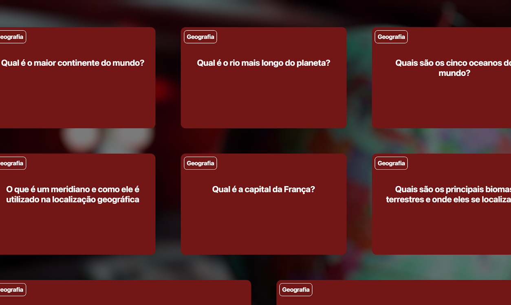
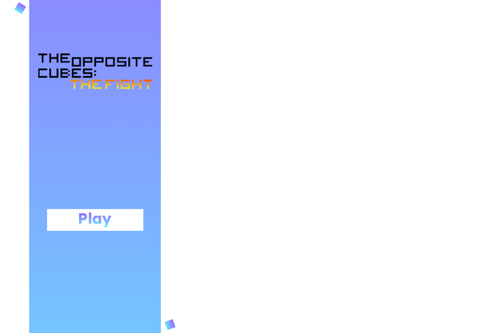

Meus projetos

Projeto de Perguntas:
Este projeto é uma página web que apresenta uma lista de perguntas de Geografia, incluindo informações sobre o mundo. A página é estilizada com CSS para uma visualização agradável e usa fontes externas.

The Opposite Cubes: The Fight
Este projeto e segundo jogo da série "The Opposite Cubes" feito no Scracth. Uma sequência baseada em uma briga entre cubos opostos, porém agora com novas mecânicas e poderes.

Site da Vovó Palmirinha
Este projeto da Vovó Palmirinha cria uma experiência interativa e educativa sobre comida, permitindo aos usuários explorar informações como novas receitas e chef do ano.